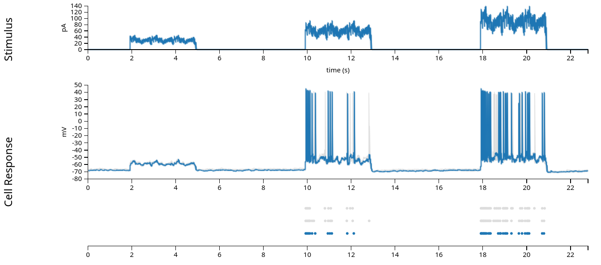

Note
Click here to download the full example code
Solutions tutorial pynapple & NeMoS
For our first example, we will look at a very simple dataset: patch-clamp recordings from a single neuron in layer 4 of mouse primary visual cortex. This data is from the Allen Brain Atlas, and experimenters injected current directly into the cell, while recording the neuron's membrane potential and spiking behavior. The experiments varied the shape of the current across many sweeps, mapping the neuron's behavior in response to a wide range of potential inputs.
For our purposes, we will examine only one of these sweeps, "Noise 1", in which the experimentalists injected three pulses of current. The current is a square pulse multiplied by a sinusoid of a fixed frequency, with some random noise riding on top.

In the figure above (from the Allen Brain Atlas website), we see the approximately 22 second sweep, with the input current plotted in the first row, the intracellular voltage in the second, and the recorded spikes in the third. (The grey lines and dots in the second and third rows comes from other sweeps with the same stimulus, which we'll ignore in this exercise.) When fitting the Generalized Linear Model, we are attempting to model the spiking behavior, and we generally do not have access to the intracellular voltage, so for the rest of this notebook, we'll use only the input current and the recorded spikes displayed in the first and third rows.
First, let us see how to load in the data and reproduce the above figure, which we'll do using pynapple. This will largely be a review of what we went through yesterday. After we've explored the data some, we'll introduce the Generalized Linear Model and how to fit it with NeMoS.
Learning objectives
- Learn how to explore spiking data and do basic analyses using pynapple
- Learn how to structure data for NeMoS
- Learn how to fit a basic Generalized Linear Model using NeMoS
- Learn how to retrieve the parameters and predictions from a fit GLM for intrepetation.
Warning
This tutorial uses matplotlib for displaying the figure
You can install all with pip install matplotlib requests tqdm
# !pip install matplotlib requests tqdm
In case you did not install beforehand pynapple and nemos, here is the command to install it.
# !pip install pynapple nemos
import math
import os
Import everything
import jax
import matplotlib.pyplot as plt
import nemos as nmo
import numpy as np
import pynapple as nap
import requests
import tqdm
import workshop_utils.plotting as plotting
# configure plots some
plt.style.use("workshop_utils/nemos.mplstyle")
Data Streaming
While you can download the data directly from the Allen Brain Atlas and interact with it using their AllenSDK, we prefer the burgeoning Neurodata Without Borders (NWB) standard. We have converted this single dataset to NWB and uploaded it to the Open Science Framework. This allows us to easily load the data using pynapple, and it will immediately be in a format that pynapple understands!
Tip
Pynapple can stream any NWB-formatted dataset! See their documentation for more details, and see the DANDI Archive for a repository of compliant datasets.
The first time the following cell is run, it will take a little bit of time to download the data, and a progress bar will show the download's progress. On subsequent runs, the cell gets skipped: we do not need to redownload the data.
path = "allen_478498617.nwb"
if path not in os.listdir("."):
r = requests.get(f"https://osf.io/vf2nj/download", stream=True)
block_size = 1024*1024
with open(path, 'wb') as f:
for data in tqdm.tqdm(r.iter_content(block_size), unit='MB', unit_scale=True,
total=math.ceil(int(r.headers.get('content-length', 0))//block_size)):
f.write(data)
Pynapple
Data structures and preparation
Now that we've downloaded the data, let's open it with pynapple and examine its contents.
data = nap.load_file(path)
print(data)
Out:
/Users/gviejo/miniconda3/envs/fens2024/lib/python3.11/site-packages/hdmf/utils.py:668: UserWarning: Ignoring cached namespace 'hdmf-common' version 1.7.0 because version 1.8.0 is already loaded.
return func(args[0], **pargs)
/Users/gviejo/miniconda3/envs/fens2024/lib/python3.11/site-packages/hdmf/utils.py:668: UserWarning: Ignoring cached namespace 'core' version 2.6.0-alpha because version 2.7.0 is already loaded.
return func(args[0], **pargs)
/Users/gviejo/miniconda3/envs/fens2024/lib/python3.11/site-packages/hdmf/utils.py:668: UserWarning: Ignoring cached namespace 'hdmf-experimental' version 0.4.0 because version 0.5.0 is already loaded.
return func(args[0], **pargs)
allen_478498617
┍━━━━━━━━━━┯━━━━━━━━━━━━━┑
│ Keys │ Type │
┝━━━━━━━━━━┿━━━━━━━━━━━━━┥
│ units │ TsGroup │
│ epochs │ IntervalSet │
│ stimulus │ Tsd │
│ response │ Tsd │
┕━━━━━━━━━━┷━━━━━━━━━━━━━┙
The dataset contains several different pynapple objects, which we discussed yesterday. Let's see how these relate to the data we visualized above:
units: dictionary of neurons, holding each neuron's spike timestamps.epochs: start and end times of different intervals, defining the experimental structure, specifying when each stimulation protocol began and ended.stimulus: injected current, in Amperes, sampled at 20k Hz.response: the neuron's intracellular voltage, sampled at 20k Hz. We will not use this info in this example
Now let's go through the relevant variables in some more detail:
First, let's examine the epochs:
epochs = data["epochs"]
epochs.keys()
Out:
dict_keys(['Long Square', 'Noise 1', 'Noise 2', 'Ramp', 'Short Square', 'Short Square - Triple', 'Square - 2s Suprathreshold', 'Test'])
epochs is a dictionary with strings for keys and
IntervalSets
for values. Each key defines the stimulus protocol, with the value defining
the beginning and end of that stimulation protocol.
noise_interval = epochs["Noise 1"]
noise_interval
Out:
start end
0 460.768 488.788
1 526.808 554.828
2 592.848 620.868
shape: (3, 2), time unit: sec.
As described above, we will be examining "Noise 1". We can see it contains three rows, each defining a separate sweep. We'll just grab the first sweep (shown in blue in the pictures above) and ignore the other two (shown in gray).
noise_interval = noise_interval[0]
noise_interval
Out:
start end
0 460.768 488.788
shape: (1, 2), time unit: sec.
Now let's examine the input current:
# convert current from Ampere to pico-amperes, to match the Allen Institute figures and
# move the values to a more reasonable range.
current = data["stimulus"] * 1e12
current
Out:
Time (s)
------------- --
0.0 0
5e-05 0
0.0001 0
0.00015 0
0.0002 0
0.00025 0
0.0003 0
0.00035 0
0.0004 0
0.00045 0
0.0005 0
0.00055 0
0.0006 0
0.00065 0
0.0007 0
0.00075 0
0.0008 0
0.00085 0
...
897.420099999 0
897.420149999 0
897.420199999 0
897.420249999 0
897.420299999 0
897.420349999 0
897.420399999 0
897.420449999 0
897.420499999 0
897.420549999 0
897.420599999 0
897.420649999 0
897.420699999 0
897.420749999 0
897.420799999 0
897.420849999 0
897.420899999 0
897.420949999 0
dtype: float64, shape: (11348420,)
current is a Tsd
(TimeSeriesData)
object with 2 columns. Like all Tsd objects, the first column contains the
time index and the second column contains the data; in this case, the current
in pA.
Currently current contains the entire ~900 second experiment but, as
discussed above, we only want one of the "Noise 1" sweeps. Fortunately,
pynapple makes it easy to grab out the relevant time points by making use
of the noise_interval we defined above:
current = current.restrict(noise_interval)
current
Out:
Time (s)
------------- --
460.768 0
460.76805 0
460.7681 0
460.76815 0
460.7682 0
460.76825 0
460.7683 0
460.76835 0
460.7684 0
460.76845 0
460.7685 0
460.76855 0
460.7686 0
460.76865 0
460.7687 0
460.76875 0
460.7688 0
460.76885 0
...
488.787099993 0
488.787149993 0
488.787199993 0
488.787249993 0
488.787299993 0
488.787349993 0
488.787399993 0
488.787449993 0
488.787499993 0
488.787549993 0
488.787599993 0
488.787649993 0
488.787699993 0
488.787749993 0
488.787799993 0
488.787849993 0
488.787899993 0
488.787949993 0
dtype: float64, shape: (560400,)
Notice that the timestamps have changed and our shape is much smaller.
Finally, let's examine the spike times. These are stored in a
TsGroup,
a dictionary-like object that holds multiple Ts (timeseries) objects with
potentially different time indices:
spikes = data["units"]
spikes
Out:
Index rate location group
------- ------- ---------- -------
0 0.87805 v1 0
Typically, this is used to hold onto the spike times for a population of neurons. In this experiment, we only have recordings from a single neuron, so there's only one row.
We can index into the TsGroup to see the timestamps for this neuron's
spikes:
spikes[0]
Out:
Time (s)
1.85082
2.06869
2.20292
2.325815
2.42342
2.521415
2.604795
2.689605
2.76657
2.84147
2.913
2.978915
3.045105
3.106475
3.166035
3.21995
3.277105
3.328295
...
843.40877
843.57167
843.734835
852.07777
852.16089
852.243975
860.746765
860.789795
860.832855
869.41565
869.43864
869.461695
878.08481
878.09765
878.110865
886.75375
886.761465
886.76995
shape: 777
Similar to current, this object originally contains data from the entire
experiment. To get only the data we need, we again use
restrict(noise_interval):
spikes = spikes.restrict(noise_interval)
print(spikes)
spikes[0]
Out:
Index rate location group
------- ------- ---------- -------
0 1.42755 v1 0
Time (s)
470.81754
470.85842
470.907235
470.954925
471.0074
471.107175
471.25083
471.82728
471.917655
472.00696
472.71008
473.009605
478.807455
478.825935
478.85967
478.896305
478.92566
478.955415
...
479.196605
479.24137
479.59276
479.669225
479.70719
479.815245
479.89998
479.94611
479.99794
480.196545
480.53543
480.67927
480.81817
480.90529
480.94921
481.002715
481.60008
481.67727
shape: 40
Now, let's visualize the data from this trial, replicating rows 1 and 3 from the Allen Brain Atlas figure at the beginning of this notebook:
fig, ax = plt.subplots(1, 1, figsize=(8, 2))
ax.plot(current, "grey")
ax.plot(spikes.to_tsd([-5]), "|", color="k", ms = 10)
ax.set_ylabel("Current (pA)")
ax.set_xlabel("Time (s)")

Out:
Text(0.5, -6.277777777777782, 'Time (s)')
Basic analyses
Before using the Generalized Linear Model, or any model, it's worth taking some time to examine our data and think about what features are interesting and worth capturing. As Edoardo explained earlier today, the GLM is a model of the neuronal firing rate. However, in our experiments, we do not observe the firing rate, only the spikes! Moreover, neural responses are typically noisy — even in this highly controlled experiment where the same current was injected over multiple trials, the spike times were slightly different from trial-to-trial. No model can perfectly predict spike times on an individual trial, so how do we tell if our model is doing a good job?
Our objective function is the log-likelihood of the observed spikes given the predicted firing rate. That is, we're trying to find the firing rate, as a function of time, for which the observed spikes are likely. Intuitively, this makes sense: the firing rate should be high where there are many spikes, and vice versa. However, it can be difficult to figure out if your model is doing a good job by squinting at the observed spikes and the predicted firing rates plotted together.
One common way to visualize a rough estimate of firing rate is to smooth the spikes by convolving them with a Gaussian filter.
Info
This is a heuristic for getting the firing rate, and shouldn't be taken as the literal truth (to see why, pass a firing rate through a Poisson process to generate spikes and then smooth the output to approximate the generating firing rate). A model should not be expected to match this approximate firing rate exactly, but visualizing the two firing rates together can help you reason about which phenomena in your data the model is able to adequately capture, and which it is missing.
For more information, see section 1.2 of Theoretical Neuroscience, by Dayan and Abbott.
Pynapple can easily compute this approximate firing rate, and plotting this information will help us pull out some phenomena that we think are interesting and would like a model to capture.
First, we must convert from our spike times to binned spikes:
# bin size in seconds
bin_size = 0.001
# Get spikes for neuron 0
count = spikes[0].count(bin_size)
count
Out:
Time (s)
---------- --
460.7685 0
460.7695 0
460.7705 0
460.7715 0
460.7725 0
460.7735 0
460.7745 0
460.7755 0
460.7765 0
460.7775 0
460.7785 0
460.7795 0
460.7805 0
460.7815 0
460.7825 0
460.7835 0
460.7845 0
460.7855 0
...
488.7705 0
488.7715 0
488.7725 0
488.7735 0
488.7745 0
488.7755 0
488.7765 0
488.7775 0
488.7785 0
488.7795 0
488.7805 0
488.7815 0
488.7825 0
488.7835 0
488.7845 0
488.7855 0
488.7865 0
488.7875 0
dtype: int64, shape: (28020,)
Now, let's convert the binned spikes into the firing rate, by smoothing them with a gaussian kernel. Pynapple again provides a convenience function for this:
# the inputs to this function are the standard deviation of the gaussian in seconds and
# the full width of the window, in standard deviations. So std=.05 and size_factor=20
# gives a total filter size of 0.05 sec * 20 = 1 sec.
firing_rate = count.smooth(std=.05, size_factor=20)
# convert from spikes per bin to spikes per second (Hz)
firing_rate = firing_rate / bin_size
Now that we've done all this preparation, let's make a plot to more easily visualize the data.
# we're hiding the details of the plotting function for the purposes of this
# tutorial, but you can find it in the associated github repo if you're
# interested:
# https://github.com/flatironinstitute/ccn-workshop-fens-2024/blob/main/src/workshop_utils/plotting.py
plotting.current_injection_plot(current, spikes, firing_rate)
So now that we can view the details of our experiment a little more clearly, what do we see?
-
We have three intervals of increasing current, and the firing rate increases as the current does.
-
While the neuron is receiving the input, it does not fire continuously or at a steady rate; there appears to be some periodicity in the response. The neuron fires for a while, stops, and then starts again. There's periodicity in the input as well, so this pattern in the response might be reflecting that.
-
There's some decay in firing rate as the input remains on: there are three or four "bumps" of neuronal firing in the second and third intervals and they decrease in amplitude, with the first being the largest.
These give us some good phenomena to try and predict! But there's something that's not quite obvious from the above plot: what is the relationship between the input and the firing rate? As described in the first bullet point above, it looks to be monotonically increasing: as the current increases, so does the firing rate. But is that exactly true? What form is that relationship?
Pynapple can compute a tuning curve to help us answer this question, by binning our spikes based on the instantaneous input current and computing the firing rate within those bins:
tuning_curve = nap.compute_1d_tuning_curves(spikes, current, nb_bins=15)
tuning_curve
tuning_curve is a pandas DataFrame where each column is a neuron (one
neuron in this case) and each row is a bin over the feature (here, the input
current). We can easily plot the tuning curve of the neuron:
plotting.tuning_curve_plot(tuning_curve)
Out:
<Figure size 640x480 with 1 Axes>
We can see that, while the firing rate mostly increases with the current, it's definitely not a linear relationship, and it might start decreasing as the current gets too large.
So this gives us three interesting phenomena we'd like our model to help explain: the tuning curve between the firing rate and the current, the firing rate's periodicity, and the gradual reduction in firing rate while the current remains on.
NeMoS
Preparing data
Now that we understand our model, we're almost ready to put it together. Before we construct it, however, we need to get the data into the right format.
NeMoS requires that the predictors and spike counts it operates on have the following properties:
-
predictors and spike counts must have the same number of time points.
-
predictors must be two-dimensional, with shape
(n_time_bins, n_features). In this example, we have a single feature (the injected current). -
spike counts must be one-dimensional, with shape
(n_time_bins, ). As discussed above,n_time_binsmust be the same for both the predictors and spike counts. -
predictors and spike counts must be
jax.numpyarrays,numpyarrays, orpynappleTsdFrame/Tsd.
What is jax?
jax is a Google-supported python library for automatic differentiation. It has all sorts of neat features, but the most relevant of which for NeMoS is its GPU-compatibility and just-in-time compilation (both of which make code faster with little overhead!), as well as the collection of optimizers present in jaxopt.
First, we require that our predictors and our spike counts have the same
number of time bins. We can achieve this by down-sampling our current to the
spike counts to the proper resolution using the
bin_average
method from pynapple:
Info
We refer to the model inputs as both "the predictors" and "the design matrix," a term which comes from statistics.
binned_current = current.bin_average(bin_size)
print(f"current shape: {binned_current.shape}")
# rate is in Hz, convert to KHz
print(f"current sampling rate: {binned_current.rate/1000.:.02f} KHz")
print(f"\ncount shape: {count.shape}")
print(f"count sampling rate: {count.rate/1000:.02f} KHz")
Out:
current shape: (28020,)
current sampling rate: 1.00 KHz
count shape: (28020,)
count sampling rate: 1.00 KHz
Secondly, we have to reshape our variables so that they are the proper shape:
predictors:(n_time_bins, n_features)count:(n_time_bins, )
Because we only have a single predictor feature, we'll use
np.expand_dims
to ensure it is a 2d array.
# make sure predictor is 2d
predictor = np.expand_dims(binned_current, 1)
# check that the dimensionality matches NeMoS expectation
print(f"predictor shape: {predictor.shape}")
print(f"count shape: {count.shape}")
Out:
predictor shape: (28020, 1)
count shape: (28020,)
What if I have more than one neuron?
In this example, we're only fitting data for a single neuron, but you might wonder how the data should be shaped if you have more than one neuron — do you add an extra dimension? or concatenate neurons along one of the existing dimensions?
In NeMoS, we fit Generalized Linear Models to a single neuron at a time. We'll
discuss this more in the following tutorial, but briefly:
you get the same answer whether you fit the neurons separately or simultaneously,
and fitting them separately can make your life easier. We also provide a
PopulationGLM object to fit an entirely population at once, if you prefer to do
so.
Fitting the model
Now we're ready to fit our model!
First, we need to define our GLM model object. We intend for users to interact with
our models like scikit-learn
estimators. In a nutshell, a model instance is initialized with hyperparameters that
specify optimization and model details, and then the user calls the .fit() function
with the design matrix and the observed data to fit the model. We will walk you
through the process below by example, but if you are interested in reading more
details see the Getting Started with
scikit-learn webpage.
To initialize our model, we need to specify the regularizer and observation model objects, both of which should be one of our custom objects:
- Regularizer: this object specifies both the solver algorithm and the
regularization scheme. They are jointly specified because each
regularization scheme has a list of compatible solvers to choose between.
Regularization modifies the objective function to reflect your prior
beliefs about the parameters, such as sparsity. Regularization becomes more
important as the number of input features, and thus model parameters,
grows. They can be found within
nemos.regularizer.
Warning
With a convex problem like the GLM, in theory it does not matter which solver algorithm you use. In practice, due to numerical issues, it generally does. Thus, it's worth trying a couple to see how their solutions compare. (Note that, since regularization modifies the objective function, different regularization schemes will always give different results.)
- Observation model: this object links the firing rate and the observed data (in this case, spikes), describing the distribution of neural activity (and thus changing the log-likelihood). For spiking data, we use the Poisson observation model, but nemos provides other options for continuous data, such as calcium imaging.
For this example, we'll use an un-regularized LBFGS solver. We'll discuss regularization in a later tutorial.
Why LBFGS?
LBFGS is a quasi-Netwon method, that is, it uses the first derivative (the gradient) and approximates the second derivative (the Hessian) in order to solve the problem. This means that LBFGS tends to find a solution faster and is often less sensitive to step-size. Try other solvers to see how they behave!
model = nmo.glm.GLM(solver_name="LBFGS")
Now that we've initialized our model with the optimization parameters, we can
fit our data! In the previous section, we prepared our model matrix
(predictor) and target data (count), so to fit the model we just need to
pass them to the model:
model.fit(predictor, count)
Out:
<nemos.glm.GLM object at 0x3570c6ed0>
Now that we've fit our data, we can retrieve the resulting parameters.
Similar to scikit-learn, these are stored as the coef_ and intercept_
attributes:
print(f"firing_rate(t) = exp({model.coef_} * current(t) + {model.intercept_})")
Out:
firing_rate(t) = exp([0.05330383] * current(t) + [-9.761143])
Note that model.coef_ has shape (n_features, ) and model.intercept_ has shape
(n_neurons, ) (in this case, both are 1):
print(f"coef_ shape: {model.coef_.shape}")
print(f"intercept_ shape: {model.intercept_.shape}")
Out:
coef_ shape: (1,)
intercept_ shape: (1,)
It's nice to get the parameters above, but we can't tell how well our model is doing by looking at them. So how should we evaluate our model?
First, we can use the model to predict the firing rates and compare that to
the smoothed spike train. By calling predict() we can get the model's
predicted firing rate for this data. Note that this is just the output of the
model's linear and nonlinear steps, as described in Edoardo's presentation!
predicted_fr = model.predict(predictor)
# convert units from spikes/bin to spikes/sec
predicted_fr = predicted_fr / bin_size
# and let's smooth the firing rate the same way that we smoothed the
# spike train
smooth_predicted_fr = predicted_fr.smooth(.05, size_factor=20)
# and plot!
plotting.current_injection_plot(current, spikes, firing_rate,
smooth_predicted_fr)
Out:
/Users/gviejo/pynapple/pynapple/core/utils.py:196: UserWarning: Converting 'd' to numpy.array. The provided array was of type 'ArrayImpl'.
warnings.warn(
What do we see above? Note that the y-axes in the final row are different for each subplot!
-
Predicted firing rate increases as injected current goes up — Success!

-
The amplitude of the predicted firing rate only matches the observed amplitude in the third interval: it's too high in the first and too low in the second — Failure!

-
Our predicted firing rate has the periodicity we see in the smoothed spike train — Success!
-
The predicted firing rate does not decay as the input remains on: the amplitudes are identical for each of the bumps within a given interval — Failure!
The failure described in the second point may seem particularly confusing — approximate amplitude feels like it should be very easy to capture, so what's going on?
To get a better sense, let's look at the mean firing rate over the whole period:
# compare observed mean firing rate with the model predicted one
print(f"Observed mean firing rate: {np.mean(count) / bin_size} Hz")
print(f"Predicted mean firing rate: {np.mean(predicted_fr)} Hz")
Out:
Observed mean firing rate: 1.4275517487508922 Hz
Predicted mean firing rate: 1.430655598640442 Hz
We matched the average pretty well! So we've matched the average and the range from the third interval reasonably well, but overshot at low inputs and undershot in the middle.
We can see this more directly by computing the tuning curve for our predicted firing rate and comparing that against our smoothed spike train from the beginning of this notebook. Pynapple can help us again with this:
tuning_curve_model = nap.compute_1d_tuning_curves_continuous(predicted_fr, current, 15)
fig = plotting.tuning_curve_plot(tuning_curve)
fig.axes[0].plot(tuning_curve_model, color="tomato", label="glm")
fig.axes[0].legend()
Out:
<matplotlib.legend.Legend object at 0x31dcf9010>
In addition to making the mismatch at low and medium input values discussed earlier a little more obvious, this tuning curve comparison also highlights that this model thinks the firing rate will continue to grow as the injected current increases, which is not reflected in the data.
Viewing this plot also makes it clear that the model's tuning curve is approximately exponential. We already knew that! That's what it means to be a LNP model of a single input. But it's nice to see it made explicit.
Extending the model
We can try extending the model in order to improve its performance. There are many ways one can do this: the iterative refinement and improvement of your model is an important part of the scientific process! In this tutorial, we'll discuss one such extension, but you're encouraged to try others.
Our model right now assumes that the neuron's spiking behavior is only driven by the instantaneous input current. That is, we're saying that history doesn't matter. But we know that neurons integrate information over time, so why don't we add extend our model to reflect that?
To do so, we will change our predictors, including variables that represent the history of the input current as additional columns. First, we must decide the duration of time that we think is relevant: does current passed to the cell 10 msec ago matter? what about 100 msec? 1 sec? To start, we should use our a priori knowledge about the system to determine a reasonable initial value. Later, we can examine the model parameters and do formal model comparison in order to determine how much history is necessary.
For now, let's use a duration of 200 msec:
current_history_duration_sec = .2
# convert this from sec to bins
current_history_duration = int(current_history_duration_sec / bin_size)
To construct our new predictors, we could simply take the current and shift it
incrementally. The value of predictor binned_current at time $t$ is the injected
current at time $t$; by shifting binned_current backwareds by 1, we are modeling the
effect of the current at time $t-1$ on the firing rate at time $t$, and so on for all
shifts $i$ up to current_history_duration:
binned_current[1:]
binned_current[2:]
# etc
Out:
Time (s)
---------- --
460.7705 0
460.7715 0
460.7725 0
460.7735 0
460.7745 0
460.7755 0
460.7765 0
460.7775 0
460.7785 0
460.7795 0
460.7805 0
460.7815 0
460.7825 0
460.7835 0
460.7845 0
460.7855 0
460.7865 0
460.7875 0
...
488.7705 0
488.7715 0
488.7725 0
488.7735 0
488.7745 0
488.7755 0
488.7765 0
488.7775 0
488.7785 0
488.7795 0
488.7805 0
488.7815 0
488.7825 0
488.7835 0
488.7845 0
488.7855 0
488.7865 0
488.7875 0
dtype: float64, shape: (28018,)
In general, however, this is not a good way to extend the model in the way discussed. You will end end up with a very large number of predictive variables (one for every bin shift!), which will make the model more sensitive to noise in the data.
A better idea is to do some dimensionality reduction on these predictors, by
parametrizing them using basis functions. These will allow us to capture
interesting non-linear effects with a relatively low-dimensional parametrization that
preserves convexity. NeMoS has a whole library of basis objects available at
nmo.basis, and choosing which set of basis functions and their parameters, like
choosing the duration of the current history predictor, requires knowledge of your
problem, but can later be examined using model comparison tools.
For history-type inputs like we're discussing, the raised cosine log-stretched basis first described in Pillow et al., 2005 1 is a good fit. This basis set has the nice property that their precision drops linearly with distance from event, which is a makes sense for many history-related inputs in neuroscience: whether an input happened 1 or 5 msec ago matters a lot, whereas whether an input happened 51 or 55 msec ago is less important.
plotting.plot_basis()
NeMoS's Basis objects handle the construction and use of these basis functions. When
we instantiate this object, the main argument we need to specify is the number of
functions we want: with more basis functions, we'll be able to represent the effect of
the corresponding input with the higher precision, at the cost of adding additional
parameters.
We also need to specify whether we want to use the basis in convolutional ("conv")
or evaluation ("eval") mode. This is determined by the type of feature we wish to
represent with the basis:
-
Evaluation mode transforms the input through the non-linear function defined by the basis. This can be used to represent features such as spatial location and head direction.
-
Convolution mode applies a convolution of the input data to the bank of filters defined by the basis, and is particularly useful when analyzing data with inherent temporal dependencies, such as spike history or the history of input current in this example. In convolution mode, we must additionally specify the
window_size, the length of the filters in bins.
basis = nmo.basis.RaisedCosineBasisLog(
n_basis_funcs=8, mode="conv", window_size=current_history_duration
)
Visualizing Basis objects
NeMoS provides some convenience functions for quickly visualizing the basis, in order to create plots like the type seen above.
# basis_kernels is an array of shape (current_history_duration, n_basis_funcs)
# while time is an array of shape (current_history_duration, )
time, basis_kernels = basis.evaluate_on_grid(current_history_duration)
# convert time to sec
time *= current_history_duration_sec
plt.plot(time, basis_kernels)
With this basis in hand, we can compress our input features:
# under the hood, this convolves the input with the filter bank visualized above
current_history = basis.compute_features(binned_current)
print(current_history)
Out:
/Users/gviejo/pynapple/pynapple/core/utils.py:196: UserWarning: Converting 'd' to numpy.array. The provided array was of type 'ArrayImpl'.
warnings.warn(
Time (s) 0 1 2 3 4 ...
---------- --- --- --- --- --- -----
460.7685 nan nan nan nan nan ...
460.7695 nan nan nan nan nan ...
460.7705 nan nan nan nan nan ...
460.7715 nan nan nan nan nan ...
460.7725 nan nan nan nan nan ...
460.7735 nan nan nan nan nan ...
460.7745 nan nan nan nan nan ...
460.7755 nan nan nan nan nan ...
460.7765 nan nan nan nan nan ...
460.7775 nan nan nan nan nan ...
460.7785 nan nan nan nan nan ...
460.7795 nan nan nan nan nan ...
460.7805 nan nan nan nan nan ...
460.7815 nan nan nan nan nan ...
460.7825 nan nan nan nan nan ...
460.7835 nan nan nan nan nan ...
460.7845 nan nan nan nan nan ...
460.7855 nan nan nan nan nan ...
...
488.7705 0 0 0 0 0 ...
488.7715 0 0 0 0 0 ...
488.7725 0 0 0 0 0 ...
488.7735 0 0 0 0 0 ...
488.7745 0 0 0 0 0 ...
488.7755 0 0 0 0 0 ...
488.7765 0 0 0 0 0 ...
488.7775 0 0 0 0 0 ...
488.7785 0 0 0 0 0 ...
488.7795 0 0 0 0 0 ...
488.7805 0 0 0 0 0 ...
488.7815 0 0 0 0 0 ...
488.7825 0 0 0 0 0 ...
488.7835 0 0 0 0 0 ...
488.7845 0 0 0 0 0 ...
488.7855 0 0 0 0 0 ...
488.7865 0 0 0 0 0 ...
488.7875 0 0 0 0 0 ...
dtype: float32, shape: (28020, 8)
We can see that our design matrix is now 28020 time points by 10 features, one for each of our basis functions. If we had used the raw shifted data as the features, like we started to do above, we'd have a design matrix with 200 features, so we've ended up with more than an order of magnitude fewer features!
Note that we have a bunch of NaNs at the beginning of each column. That's because of boundary handling: we're using the input of the past 200 msecs to predict the firing rate at time $t$, so what do we do in the first 200 msecs? The safest way is to ignore them, so that the model doesn't consider them during the fitting procedure.
What do these features look like?
# in this plot, we're normalizing the amplitudes to make the comparison easier --
# the amplitude of these features will be fit by the model, so their un-scaled
# amplitudes is not informative
plotting.plot_current_history_features(binned_current, current_history, basis,
current_history_duration_sec)
On the top row, we're visualizing the basis functions, as above. On the bottom row, we're showing the input current, as a black dashed line, and corresponding features over a small window of time, just as the current is being turned on. These features are the result of a convolution between the basis function on the top row with the black dashed line shown below. As the basis functions get progressively wider and delayed from the event start, we can thus think of the features as weighted averages that get progressively later and smoother. Let's step through that a bit more slowly.
In the leftmost plot, we can see that the first feature almost perfectly tracks the input. Looking at the basis function above, that makes sense: this function's max is at 0 and quickly decays. This feature is thus a very slightly smoothed version of the instantaneous current feature we were using before. In the middle plot, we can see that the last feature has a fairly long lag compared to the current, and is a good deal smoother. Looking at the rightmost plot, we can see that the other features vary between these two extremes, getting smoother and more delayed.
These are the elements of our feature matrix: representations of not just the instantaneous current, but also the current history, with precision decreasing as the lag between the predictor and current increases. Let's see what this looks like when we go to fit the model!
We'll initialize and create the GLM object in the same way as before, only changing the design matrix we pass to the model:
history_model = nmo.glm.GLM(solver_name="LBFGS")
history_model.fit(current_history, count)
Out:
<nemos.glm.GLM object at 0x31db42c50>
As before, we can examine our parameters, coef_ and intercept_:
print(f"firing_rate(t) = exp({history_model.coef_} * current(t) + {history_model.intercept_})")
Out:
firing_rate(t) = exp([-1.1042651e-02 2.6582897e-02 -1.3497820e-02 1.3886572e-02
-9.4295051e-03 2.6766905e-03 6.2929112e-06 -3.5014696e-04] * current(t) + [-9.883343])
Notice the shape of these parameters:
print(history_model.coef_.shape)
print(history_model.intercept_.shape)
Out:
(8,)
(1,)
coef_ has 10 values now, while intercept_ still has one — why is that?
Because we now have 10 features, but still only 1 neuron whose firing rate we're
predicting.
Let's re-examine our predicted firing rate and see how the new model does:
# all this code is the same as above
history_pred_fr = history_model.predict(current_history)
history_pred_fr = history_pred_fr / bin_size
smooth_history_pred_fr = history_pred_fr.dropna().smooth(.05, size_factor=20)
plotting.current_injection_plot(current, spikes, firing_rate,
# compare against the old firing rate
smooth_history_pred_fr, smooth_predicted_fr)
Out:
/Users/gviejo/pynapple/pynapple/core/utils.py:196: UserWarning: Converting 'd' to numpy.array. The provided array was of type 'ArrayImpl'.
warnings.warn(
We can see that there are only some small changes here. Our new model maintains the two successes of the old one: firing rate increases with injected current and shows the observed periodicity. Our model has not improved the match between the firing rate in the first or second intervals, but it seems to do a better job of capturing the onset transience, especially in the third interval.
We can similarly examine our mean firing rate and the tuning curves we examined before:
# compare observed mean firing rate with the history_model predicted one
print(f"Observed mean firing rate: {np.mean(count) / bin_size} Hz")
print(f"Predicted mean firing rate (instantaneous current): {np.nanmean(predicted_fr)} Hz")
print(f"Predicted mean firing rate (current history): {np.nanmean(smooth_history_pred_fr)} Hz")
tuning_curve_history_model = nap.compute_1d_tuning_curves_continuous(smooth_history_pred_fr, current, 15)
fig = plotting.tuning_curve_plot(tuning_curve)
fig.axes[0].plot(tuning_curve_history_model, color="tomato", label="glm (current history)")
fig.axes[0].plot(tuning_curve_model, color="tomato", linestyle='--', label="glm (instantaneous current)")
fig.axes[0].legend()
Out:
Observed mean firing rate: 1.4275517487508922 Hz
Predicted mean firing rate (instantaneous current): 1.430655598640442 Hz
Predicted mean firing rate (current history): 1.4383626960774483 Hz
<matplotlib.legend.Legend object at 0x35646ae50>
This new model is actually doing a worse job matching the mean firing rate. Looking at the tuning curve, it looks like this model does predict response saturation, at about the right level, and it seems to do a better job at the lower current levels , though its maximum firing is far too low.
Comparing the two models by examining their predictions is important, but you may also
want a number with which to evaluate and compare your models' performance. As
discussed earlier, the GLM optimizes log-likelihood to find the best-fitting
weights, and we can calculate this number using its score method:
log_likelihood = model.score(predictor, count, score_type="log-likelihood")
print(f"log-likelihood (instantaneous current): {log_likelihood}")
log_likelihood = history_model.score(current_history, count, score_type="log-likelihood")
print(f"log-likelihood (current history): {log_likelihood}")
Out:
log-likelihood (instantaneous current): -0.007939920760691166
log-likelihood (current history): -0.007489854469895363
This log-likelihood is un-normalized and thus doesn't mean that much by itself, other than "higher=better". When comparing alternative GLMs fit on the same dataset, whether that's models using different regularizers and solvers or those using different predictors, comparing log-likelihoods is a reasonable thing to do.
Info
Under the hood, NeMoS is minimizing the negative log-likelihood, as is
typical in many optimization contexts. score returns the real
log-likelihood, however, and thus higher is better.
Thus, we can see that, judging by the log-likelihood, the addition of the current
history to the model does slightly improve it. However, notice that we increased our
number of parameters tenfold, and only found a small improvement in performance.
Increasing the number of parameters makes you more susceptible to overfitting —
is this tradeoff worth it? To properly answer this question, one should split the
dataset into test and train sets, training the model on one subset of the data and
testing it on another to test the model's generalizability. We'll see a simple version
of this in the next exercise, and a more streamlined version, using scikit-learn's
pipelining and cross-validation machinery, will be presented in an advanced exercise.
Finishing up
Note that, because the log-likelihood is un-normalized, it should not be compared across datasets (because e.g., it won't account for difference in noise levels). We provide the ability to compute the pseudo-$R^2$ for this purpose:
r2 = model.score(predictor, count, score_type='pseudo-r2-Cohen')
print(f"pseudo-r2 (instantaneous current): {r2}")
r2 = history_model.score(current_history, count, score_type='pseudo-r2-Cohen')
print(f"pseudo-r2 (current history): {r2}")
Out:
pseudo-r2 (instantaneous current): 0.3037663698196411
pseudo-r2 (current history): 0.3568980097770691
Additionally, you might be wondering how to simulate spikes — the GLM is a LNP
model, but the firing rate is just the output of LN, its first two steps. The firing
rate is just the mean of a Poisson process, so we can pass it to jax.random.poisson:
spikes = jax.random.poisson(jax.random.PRNGKey(123), predicted_fr.values)
Note that this is not actually that informative and, in general, it is recommended that you focus on firing rates when interpreting your model.
Also, while including spike history is often helpful, it can sometimes make simulations unstable: if your GLM includes auto-regressive inputs (e.g., neurons are connected to themselves or each other), simulations can sometimes can behave poorly because of runaway excitation 2 3.
Further Exercises
Despite the simplicity of this dataset, there is still more that we can do here. The following sections provide some possible exercises to try yourself!
Other stimulation protocols
We've only fit the model to a single stimulation protocol, but our dataset contains many more! How does the model perform on "Ramp"? On "Noise 2"? Based on the example code above, write new code that fits the model on some other stimulation protocol and evaluate its performance. Which stimulation does it perform best on? Which is the worst?
Train and test sets
In this example, we've used been fitting and evaluating our model on the same data set. That's generally a bad idea! Try splitting the data in to train and test sets, fitting the model to one portion of the data and evaluating on another portion. You could split this stimulation protocol into train and test sets or use different protocols to train and test on.
Model extensions
Even our extended model did not do a good job capturing the onset transience seen in the data, and we could probably improve the match between the amplitudes of the predicted firing rate and smoothed spike train. How would we do that?
We could try adding the following inputs to the model, alone or together:
-
Tinkering with the current history: we tried adding the current history to the model, but we only investigated one set of choices with the basis functions. What if we tried changing the duration of time we considered (
current_history_duration_sec)? Different numbers of basis functions? A different choice for theBasisobject altogether? What effects would these have on our model? -
Spiking history: we know neurons have a refactory period (they are unable to spike a second time immediately after spiking), so maybe making the model aware of whether the neuron spiked recently could help better capture the onset transience.
-
More complicated tuning curve: as we saw with the tuning curve plots, neither model explored here quite accurately captures the relationship between the current and the firing rate. Can we improve that somehow? We saw that adding the current history changed this relationship, but we can also change it without including the history by using a basis object in
"eval"mode.
Data citation
The data used in this tutorial is from the Allen Brain Map, with the following citation:
Contributors: Agata Budzillo, Bosiljka Tasic, Brian R. Lee, Fahimeh Baftizadeh, Gabe Murphy, Hongkui Zeng, Jim Berg, Nathan Gouwens, Rachel Dalley, Staci A. Sorensen, Tim Jarsky, Uygar Sümbül Zizhen Yao
Dataset: Allen Institute for Brain Science (2020). Allen Cell Types Database -- Mouse Patch-seq [dataset]. Available from brain-map.org/explore/classes/multimodal-characterization.
Primary publication: Gouwens, N.W., Sorensen, S.A., et al. (2020). Integrated morphoelectric and transcriptomic classification of cortical GABAergic cells. Cell, 183(4), 935-953.E19. https://doi.org/10.1016/j.cell.2020.09.057
Patch-seq protocol: Lee, B. R., Budzillo, A., et al. (2021). Scaled, high fidelity electrophysiological, morphological, and transcriptomic cell characterization. eLife, 2021;10:e65482. https://doi.org/10.7554/eLife.65482
Mouse VISp L2/3 glutamatergic neurons: Berg, J., Sorensen, S. A., Miller, J., Ting, J., et al. (2021) Human neocortical expansion involves glutamatergic neuron diversification. Nature, 598(7879):151-158. doi: 10.1038/s41586-021-03813-8
Total running time of the script: ( 0 minutes 18.814 seconds)
Download Python source code: tutorial_pynapple_nemos_single_cell_full.py
Download Jupyter notebook: tutorial_pynapple_nemos_single_cell_full.ipynb
Gallery generated by mkdocs-gallery
-
Pillow, J. W., Paninski, L., Uzzel, V. J., Simoncelli, E. P., & J., C. E. (2005). Prediction and decoding of retinal ganglion cell responses with a probabilistic spiking model. Journal of Neuroscience, 25(47), 11003–11013. http://dx.doi.org/10.1523/jneurosci.3305-05.2005 ↩
-
Arribas, Diego, Yuan Zhao, and Il Memming Park. "Rescuing neural spike train models from bad MLE." Advances in Neural Information Processing Systems 33 (2020): 2293-2303. ↩
-
Hocker, David, and Memming Park. "Multistep inference for generalized linear spiking models curbs runaway excitation." International IEEE/EMBS Conference on Neural Engineering, May 2017. ↩